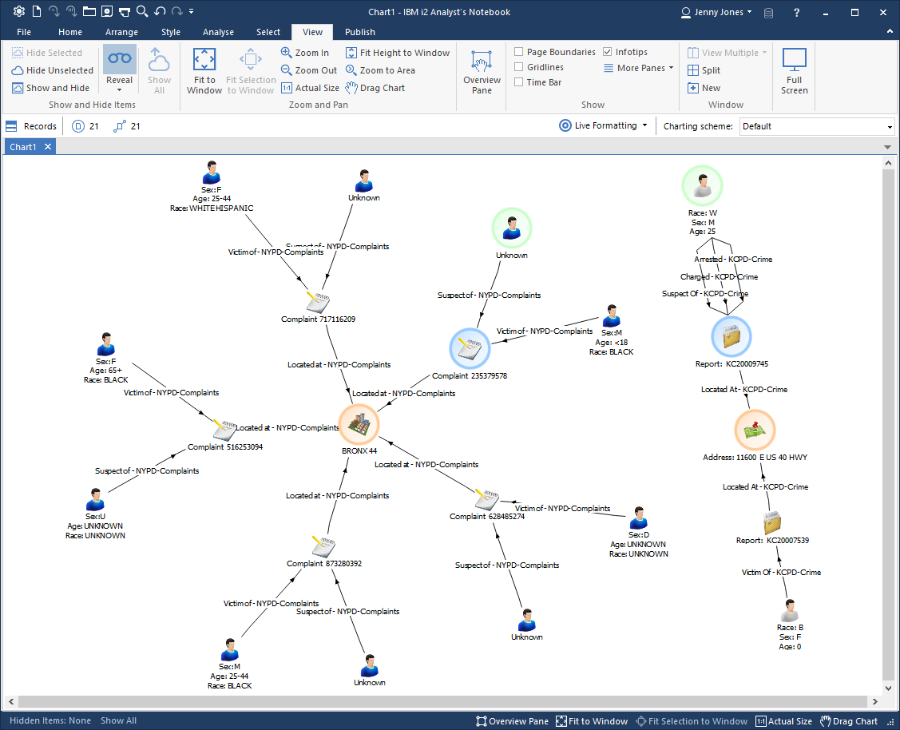
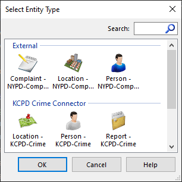
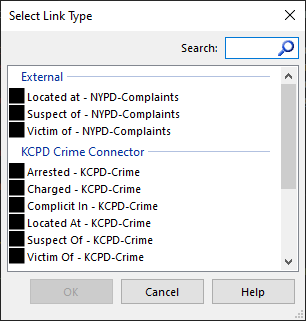
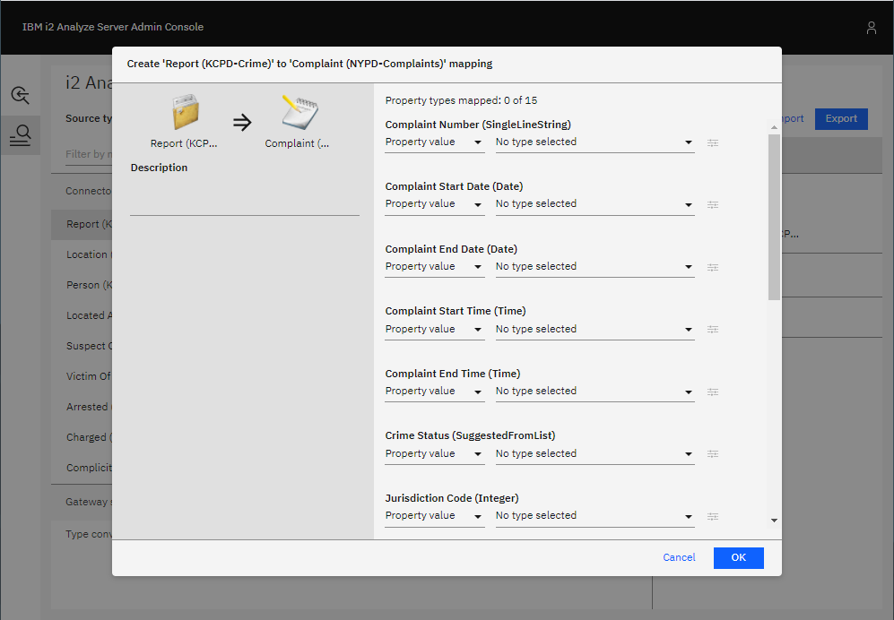
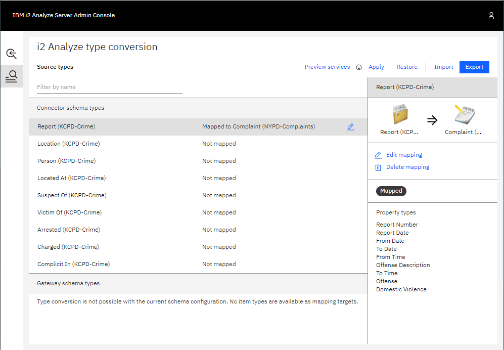
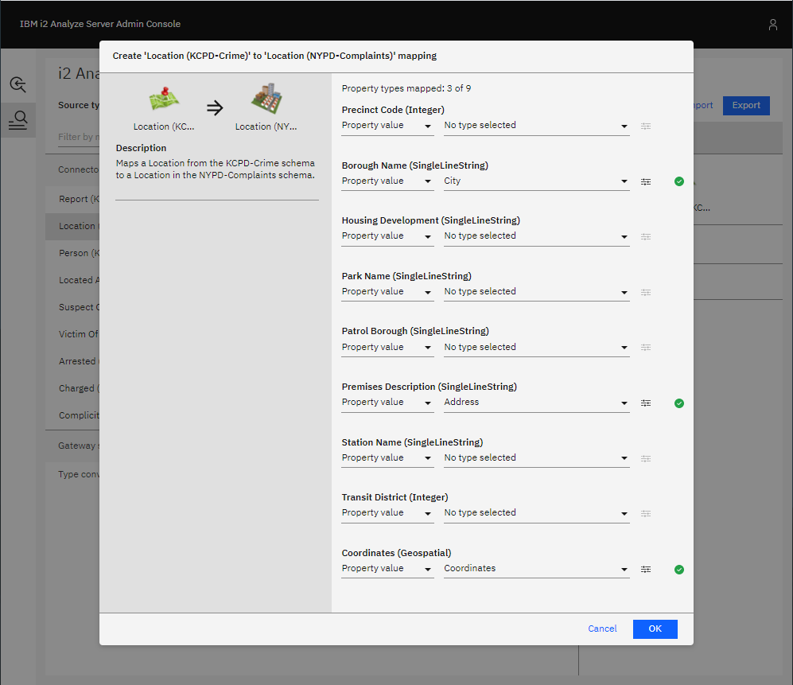
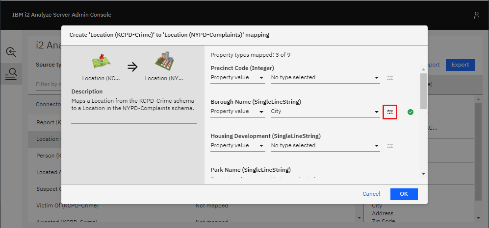
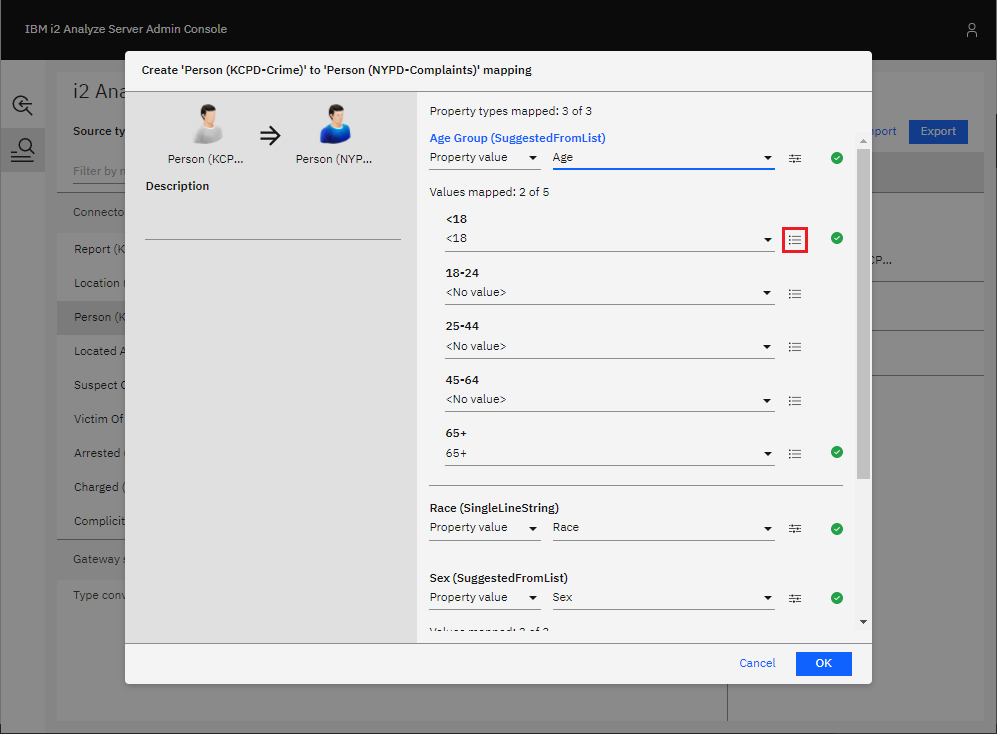

Adding a connector with a connector schema to an existing deployment
In this example scenario, a new connector with its own connector schema will be added to an i2 Analyze deployment with an existing gateway schema. Item types in the connector schema will be mapped to item types in the gateway schema where possible.
Note: These instructions can also apply to mapping item types from one gateway schema to another gateway schema.
Setting up the scenario
To follow this scenario, start by deploying i2 Analyze with the example NYPD connector configured to use a gateway schema.
You should now be able to connect to the i2 Analyze server in Analyst's Notebook Premium and use the services provided by the NYPD connector. For example, you might use the "Get All" service and copy some of the results to a chart.

Adding the new connector
Now, add the example KCPD connector to the deployment, ensuring it is configured to use its own connector schema.
You should now also be able to use the services provided by the KCPD connector and copy some results to the chart.

But you can see that the gateway schema used by the NYPD connector and the connector schema used by the KCPD connector have different item types to model the same real-world object. This is evident by the different icons used and, in the image shown, you can see pairs of the similar types highlighted in the same color.
|  |  |
|---|---|
By looking at all the available item types, you can see that both schemas have their own:
- Person entity type
- Location entity type
- Complaint/Report entity type (these have different names, but they model the same concept)
- Located At link type
- Suspect Of link type
- Victim Of link type
This duplication can be removed using item type mappings.
Configuring item type mappings
Go to the item type mapping configuration in the i2 Analyze Server Admin Console in a web browser to see the list of item types that can be mapped. You should see the list of all item types in the KCPD-Crime schema, and that none of them have been mapped.

Where appropriate, KCPD-Crime item types can be mapped to similar item types in the pre-existing NYPD-Complaints gateway schema.
Reports and Complaints
The Report entity type in the KCPD-Crime schema can be mapped to the Complaint entity type in the NYPD-Complaints schema.
- Select the Report (KCPD-Crime) item type in the list, then click Create mapping in the right-hand pane. This shows the list of item types to which the Report item type can be mapped.
Select the Complaint item type from the NYPD-Complaints schema, then click Create mapping. You will then see all the properties of the Complaint type in the NYPD-Complaints schema, with options available to choose how they should be populated when mapping from a KCPD-Crime Report record.

In the example below, the properties of the Report (KCPD-Crime) type are mapped to the properties of the Complaint (NYPD-Complaints) according to the following table.
Report (KCPD-Crime) Complaint (NYPD-Complaints) Report Number Complaint Number From Date Complaint Start Date To Date Complaint End Date From Time Complaint Start Time To Time Complaint End Time Offense Description Offence Description Offense Classification Description Report Date Date Reported 
There is no comparable property in the Report (KCPD-Crime) type for the Complaint (NYPD-Complaints) properties:
- Crime Status
- Jurisdiction Code
- Jurisdiction Description
- Offence Classification Code
- Level Of Offence
- Internal Classification Code
- Location Of Occurrence
So these are left unmapped. This means that they will not be populated for the Complaints records that are mapped from Report records.
Once you are satisfied with all the property mappings, confirm the mapping by clicking OK. You should see in the list of types that Report (KCPD-Crime) has been mapped to Complaint (NYPD-Complaints).

Locations
Following the same process, the Location type from the KCPD-Crime schema can be mapped to the Location type in the NYPD-Complaints schema.
The Coordinates property of Location (KCPD-Crime) is automatically mapped to the Coordinates property of Location (NYPD-Complaints). Below is an example configuration you could use.

You can see that the Borough Name property of mapped Locations will be populated by the value of the City property from KCPD-Crime Location records. These properties aren't an exact match with one another, but this can be used to make it clear when Locations are in Kansas City, instead of New York City, in case Coordinates are not provided.
You can go further and ensure the Borough Name property is always populated in mapped Locations by setting a default value, which will be used if the source KCPD-Crime Location record does not contain a value for the City property. To do this:
Click the button highlighted to the right of the Borough Name configuration shown below.

Enter a default value to use for the Borough Name property if a source KCPD-Crime Location record has no City value, e.g. "Kansas City".
Click OK.
The mapping of Address to Premises Description does not seem like a perfect match either. But, the Address of a Location might be too important not to have and the Premises Description is a suitable target property in which to store it.
Again, once you are happy with the mapping configuration for Location records, click OK to confirm the mapping.
People
Following the same process, you can map the Person (KCPD-Crime) type to the Person (NYPD-Complaints) type.
The Race and Sex property mappings will be automatically-generated, so the only property left is Age. Choose to map the value of the Age property from the Person (KCPD-Crime) type as shown below.

The Age property of the source type and the target type are both SUGGESTED_FROM
properties, but they have different suggested values. The source property, from
the KCPD-Crime schema, has suggested values: <18, 19, 20, 21, ..., 64,
and 65+; whereas the target property, from the NYPD-Complaints schema, has
suggested values: <18, 18-24, 25-44, 45-64, and 65+.
Notice how the <18 and 65+ values are automatically mapped to one another.
For the remaining target values (18-24, 25-44, and 45-64), you must choose
which source values should map to them.
You have the option to select a single value of the source property from the
dropdown, but that wouldn't make much sense. For example, the source
property values 18, 19, 20, 21, 22, 23, and 24 should all map to
the 18-24 target value. To do this, click the button to the right of the
dropdown menu beneath 18-24 highlighted below.

Then, select all the appropriate values as shown below and select a source value to use when the conversion is applied in reverse during any seeded searches.

Located At
The Located At (KCPD-Crime) link type can be mapped to the Located At (NYPD-Complaints) link type by following the same process:
- Select Located At (KCPD-Crime) in the list of types, then click Create mapping in the right-hand pane.
- Select Located At from the NYPD-Complaints link types, then click Create mapping.
- There are no properties to map, so just add a description if you wish.
- Confirm the mapping by clicking OK.
Suspect Of
Map Suspect Of (KCPD-Crime) to Suspect Of (NYPD-Complaints) in the same way.
Victim Of
Map Victim Of (KCPD-Crime) to Victim Of (NYPD-Complaints) in the same way.
Testing the item type mappings
Once you have defined the item type mappings, you should see the updated list of types like the example shown below.

The Arrested, Charged, and Complicit In links are left unmapped, because there are no suitable target link types in the existing NYPD-Complaints schema. i2 Analyze will recognize that their end types have been mapped and allow the NYPD-Complaints schema's Person and Complaint types to be connected by these links.
To test the item type mappings by previewing the external searches provided by the NYPD and KCPD connectors:
- Click Apply in the top-right. This applies the mappings to the test environment that is available only through the Admin Console. It does not apply the mappings to the live server.
- Click Preview services to open a preview of how the services would behave with the mappings you have configured. Notice how the KCPD Connector's Get All service now returns item types from the NYPD-Complaints schema.
- Go back and make any changes to the mappings, repeating steps 1 and 2 until you are satisfied with the configuration.
Applying the item type mappings to the i2 Analyze server
To apply the mapping configuration you have created on the i2 Analyze server for all users, see Applying the mapping configuration to the i2 Analyze server.
The result
In Analyst's Notebook Premium, use some of the services provided by the two connectors and copy some results from each connector to your chart. Notice how there are now no duplicate item types.
For example, compare the chart below to the one at the very beginning of this walkthrough in Adding the new connector. You can see that all of the records have types from the NYPD-Complaints schema, except for the unmapped Arrested and Charged links in the top-right corner.